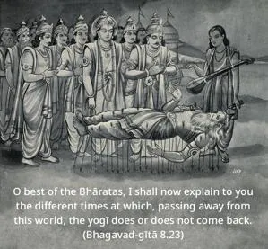
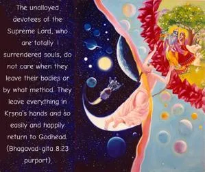
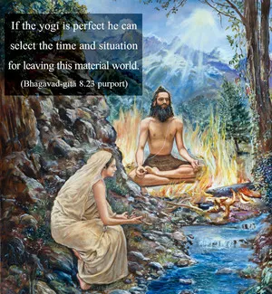

O best of the Bhāratas, I shall now explain to you the different times at which, passing away from this world, the yogī does or does not come back.



The unalloyed devotees of the Supreme Lord, who are totally surrendered souls, do not care when they leave their bodies or by what method. They leave everything in Kṛṣṇa’s hands and so easily and happily return to Godhead. But those who are not unalloyed devotees and who depend instead on such methods of spiritual realization as karma-yoga, jñāna-yoga and haṭha-yoga must leave the body at a suitable time in order to be sure of whether or not they will return to the world of birth and death.
If the yogī is perfect he can select the time and situation for leaving this material world. But if he is not so expert his success depends on his accidentally passing away at a certain suitable time. The suitable times at which one passes away and does not come back are explained by the Lord in the next verse. According to Ācārya Baladeva Vidyābhūṣaṇa, the Sanskrit word kāla used herein refers to the presiding deity of time.